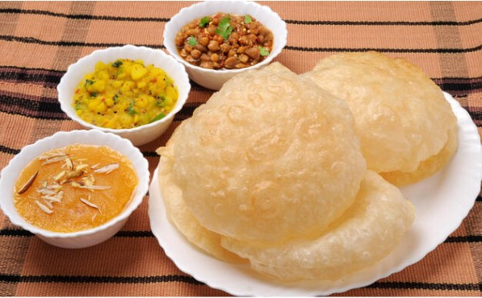

Halwa puri is a delicacy and is one of the best Pakistani foods.
It is a sweet and savory weekend brunch famous throughout the region but is most popular in the large city of Lahore.

Discounted Price: Rs.500 Rs.420
Pathoray
Pathoray or Bhaturay is a modern-day Pakistani cuisine. Pathora is flattened bread stuffed with different ingredients and
served hot with chickpeas, spicy vegetable pickles, and mint and yogurt sauce.
Discounted Price: Rs.450 Rs.399
Order Now
Chai And Paratha
Chai paratha is a simple, sweet, and savory combination of Pakistani food.
The paratha is flat, very crispy unleavened Pakistani bread.
Pakistanis love eating parathas dipped in tea.
Discounted Price: Rs.160 Rs.130
Naan Channay
Naan channay is considered one of the most common Pakistani breakfast items.
Kulcha or Naan is round flat Pakistani bread made with white flour or maida.
Channey is the spicy gravy of chickpeas. This combination of naan with chickpeas gravy is mind-blowing.